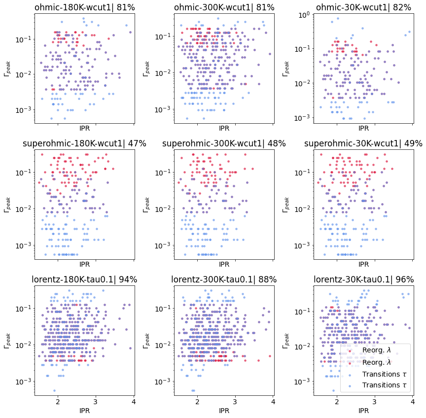
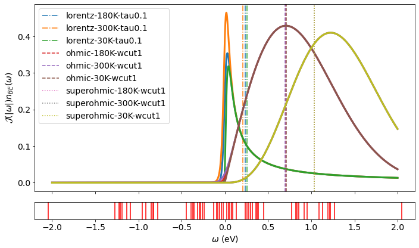

## Weekly Update --- ### Last Week 1. Still waiting to hear back from QuAMP 2. Planning next stages of current project (got the story, what data is needed?) 3. Generated new ensembles of dipole networks to probe effects of various parameters 4. Added in hexagonal lattices to my side project, for investigating 2D behaviour, and potentially quantum chaos --- #### Main Result - bath effects  -- #### Spectra and means  <p> Doing a weighted average of transitions etc shows not only different temperature sensitivities, but different typical transitions.</p> --- ### This Week 1. Examine extreme dipole networks directly 2. Calculate a bunch of network measures 3. Set up redfield analyses of new networks if space (locally/ on cluster) allows 4. Add field potential to my inversion symmetry code if possible 5. Rewrite filtering step of dipole analysis to be more performant